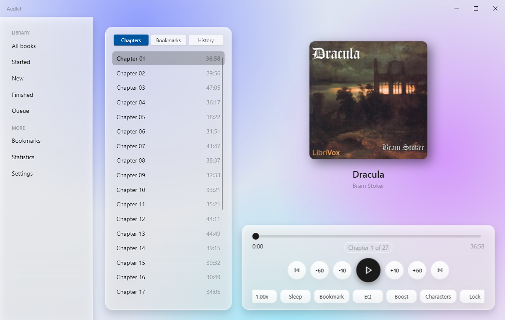
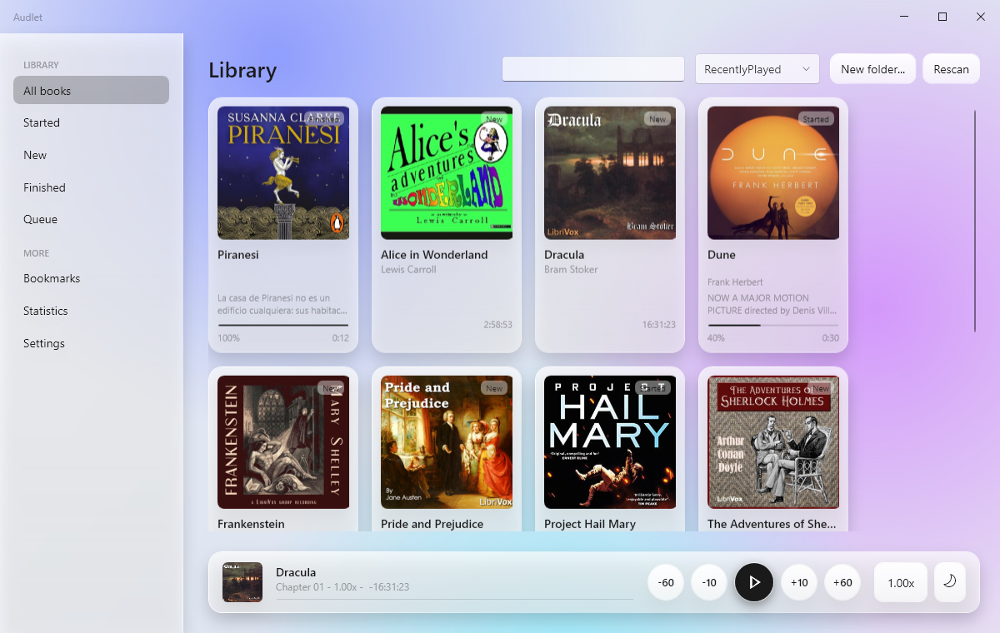

Audlet
A Windows player for the audiobooks you already own. It keeps your place in every book.
Audlet runs on Windows. Save the installer for your PC.

What it does
Your folders are the library
Drop folders or files onto the window. Rename books, sort them into folders, and fetch a cover and blurb in a click.
Chapters, bookmarks, history
Chapter ticks on the seek bar, notes on bookmarks, and a history that undoes an accidental jump.
Speed, equalizer, sleep timer
Speed from 0.5x to 3x with the voice unchanged, a five-band equalizer, and a sleep timer that fades out and asks where you dozed off.
Part of the desktop
Closing the window keeps the book playing from the tray. Media keys and taskbar controls work, playback pauses when headphones unplug, and ten themes follow Windows light and dark.

Get Audlet
One installer for your user account. It tells you when a newer version is out.
Download for WindowsAll releases on GitHub
- Windows 11, 64-bitWindows 10 is not supported.
- MP3, M4A, M4B, FLAC, Opus, OGG, WAV, WavPackChapters and covers are read from the files.
- SmartScreen may ask onceThe installer is not code-signed yet. Choose "More info", then "Run anyway".
Questions
Where is my progress kept?
In a small folder under your Windows user profile, as plain files. Nothing leaves your PC.
Do I need .NET?
No. The installer carries everything it needs.
Does it play Audible files?
It plays open formats. Protected AAX files are not supported.